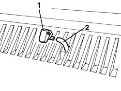
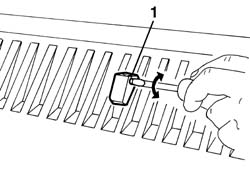

5050B10 front windscreen washer jets - r+r clean and/or position
- Path
- Procedures > 50 AUXILIARY UNITS > 5050 SCREEN WASHERS AND HEADLAMP WASH/WIPE > 5050B windscreen wash/wipe > 5050B10 front windscreen washer jets - r+r clean and/or position
- Kind
- repair procedure (removal / refitting; the operation number is the code)
- Applies to
- all engines; all production periods
- Interactive page
- https://sloeber94.github.io/elrnDB-a156/en/#/3238361
Applies to: all engines; all production periods
 Removing
Removing
 Refitting
Refitting1. Lift the bonnet lid and move the jet with the tool.
 | Name | Country |
|---|---|---|
1 | Scraper blade | 1.823.014.000 |
2. Disconnect the jet from the pipe.

Applies to: all engines; all production periods
Refitting
RemovingCheck that the jet is not damaged or clogged.
Connect the spray nozzle to the pipe.
Insert the spray nozzle in its seat.
1. Act on the screw to set the jet on the windscreen.
